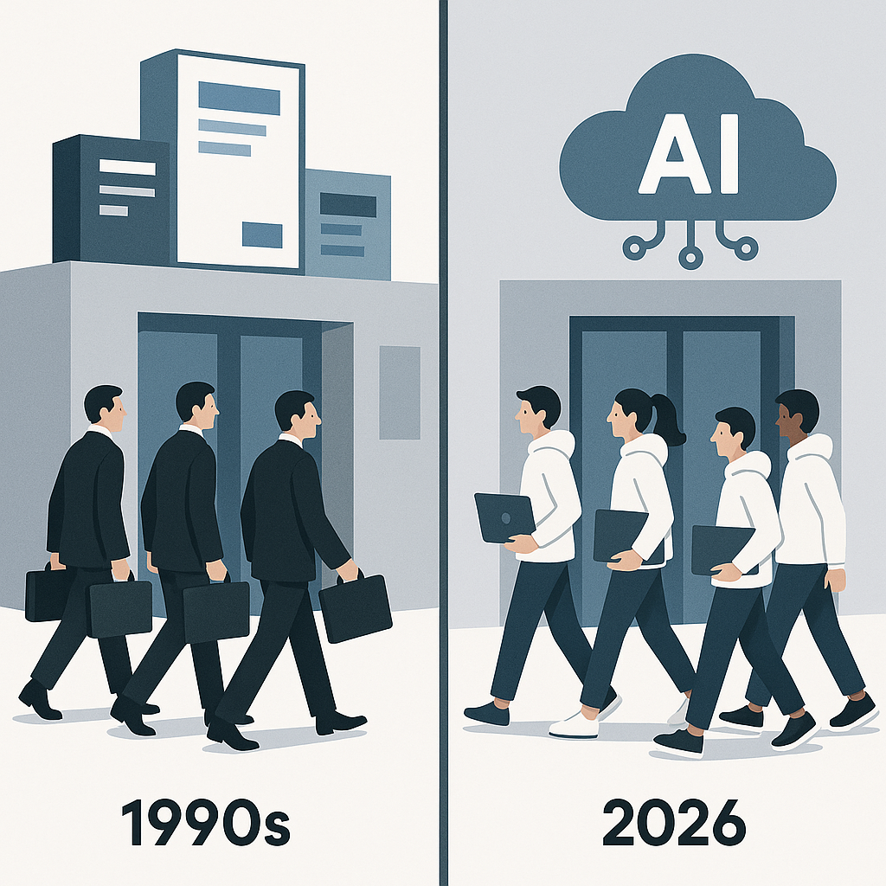

一、五月，两家 AI 大厂干了一件不像 AI 公司的事
5 月 4 日，Anthropic 宣布跟黑石（Blackstone）、Hellman & Friedman、高盛三家成立一家暂时还没名字的合资公司，规模 15 亿美元。其中 Anthropic、黑石、Hellman & Friedman 三家各掏 3 亿美元做锚定股东，高盛掏 1.5 亿做创始投资人，剩余资金来自 Apollo、General Atlantic、GIC、红杉、Leonard Green。
它要干什么？把 Claude 塞进黑石、Hellman & Friedman 旗下的 portfolio 公司，第一批锁定五个行业：医疗、制造、金融服务、零售、地产。
按 Anthropic 首席财务官 Krishna Rao 的原话——"企业对 Claude 的需求，远远跑赢了任何单一交付方式"。
翻译过来就是：API 卖不动，必须派人上门。
7 天后，OpenAI 跟上。
5 月 11 日发布"OpenAI Deployment Company"，由 OpenAI 首席运营官 Brad Lightcap 牵头。4 亿美元启动资金，19 家投资人，整体估值 140 亿美元。领投是 TPG，联合领投是 Advent、贝恩资本、Brookfield，加上软银、高盛、Warburg Pincus、BBVA 一长串名字。
但这份 19 家投资人名单里，最值得拎出来的是三家：
贝恩咨询（Bain & Company）、凯捷（Capgemini）、麦肯锡（McKinsey）。
这三家加起来，2024 年靠"帮企业搞 AI 转型"这件事就挣了大约 300 亿美元。今天它们一起掏钱给 OpenAI，让 OpenAI 去抢它们的饭碗。
同一天，OpenAI 还宣布收购一家叫 Tomoro 的伦敦 AI 工程公司。Tomoro 成立于 2023 年，本身就是跟 OpenAI 联盟起家，总部伦敦，办公室开在爱丁堡、曼彻斯特、新加坡，旗下 150 个工程师全是 Forward Deployed Engineer，客户名单里有 Mattel（芭比娃娃）、Tesco（英国超市）、Virgin Atlantic（维珍航空）、红牛、Supercell（手游）。
OpenAI 花钱买的不是 Tomoro 的模型——它根本没有自研模型。买的是这 150 个工程师的人头，和这一串客户合同。
这两家凑的 55 亿美金，没花一分钱在 GPU 上。
二、模型不挣钱，挣钱的是上门修电脑
这两件事只看资本动作，看不出门道。
叠上一个数据，逻辑立刻清晰：Ramp 4 月企业 AI 渗透率统计——Anthropic 34.4%，环比 +3.8%；OpenAI 32.3%，环比 -2.9%。Anthropic 历史上第一次反超 OpenAI。
但更刺眼的不是谁第一，是 ChatGPT 上线快三年了，企业里真正在用的不到 35%。
MIT 今年早些时候的研究更扎心：追踪了几百个企业级 GenAI 试点项目，95% 没产生任何可衡量的财务影响。
模型够不够聪明？够。
GPT-5.5 在 Terminal-Bench 2.0 上拿 82.7%。Claude Opus 4.7 在 SWE-bench Pro 上拿 64.3%。Gemini 3.1 Pro 在 GPQA Diamond 上拿 94.3%。前沿榜单上互相杀红了眼，差距小到客户根本分不出来。
但企业用不起来。
不是模型不行。是企业内部那条管子断了。数据没整理，流程没改造，员工不会写 prompt，IT 部门不知道接哪。你给一家年收 70 亿美元的零售集团扔一个 API key，等于给一个不会开车的人一辆 F1。
这就是为什么 OpenAI 花真金白银收购 Tomoro。Tomoro 没有自研模型，它有的是 150 个会跑去客户现场写 Python、接数据库、改 ERP 的人。
这群人有个特别的称呼：Forward Deployed Engineer，简称 FDE。
这个词最早是 Palantir 发明的，Alex Karp 从 2005 年开始玩。玩到今天 Palantir 估值是 OpenAI 的三分之一，但毛利率是 OpenAI 的八倍。
OpenAI 这次做的事，本质就是把 Palantir 的剧本按 30 倍速重演一遍。Anthropic 那边做的也是同一件事——只不过它绕过工程公司，直接绑定 PE。
逻辑是一样的：模型是货架商品，部署是人头生意。货架商品边际利润 5%，人头生意 40% 起。
OpenAI 2024 年烧掉了几十亿美元、2025 年估算亏损还在扩大；Anthropic 估值飙到 3800 亿美元，营收却跟估值不在一个量级。两家心里都清楚一件事：靠卖 API 永远不可能挣回烧的钱，必须有人去客户公司里把这玩意儿装上、调通、运起来。
那个干活的人，过去三十年叫埃森哲。
现在叫"OpenAI Deployment Company"。
三、麦肯锡为什么愿意给自己挖坟
回到 OpenAI Deployment Company 那 19 家投资人名单。
最值得抠的不是 TPG，是麦肯锡、贝恩咨询、凯捷三家。它们不是被动跟投，是主动找上门要进 cap table。
为什么？
答案很俗：打不过，就入股；入了股，至少分钱。
逻辑链条很短：客户的 CIO 看了一年 Claude 和 GPT，已经在追问"我能不能不通过你们直接对接 OpenAI"。麦肯锡卖 slide deck 的速度，跑不过 OpenAI 卖 API 的速度。与其等三年被截胡，不如现在掏钱进去当股东，拿一份保底。
而且这份保底相当硬：OpenAI Deployment Company 给投资人锁了 17.5% 的年化收益，5 年期，利润有上限封顶。
这是私募信贷产品的设计，不是科技公司的股权设计。
设计这种结构的人，恰好就是同坐 cap table 上的 TPG、贝恩资本、Brookfield——它们是干私募信贷出身的。
翻译过来就是：OpenAI 把自己包装成一只私募信贷基金，让 19 家钱多得没处花的机构买"AI 转型保底产品"，对赌的标的物是"OpenAI 能不能从咨询行业咬下一块肉"。
麦肯锡进来的逻辑很清晰：不用自研模型，不用养工程师，不用挑客户，出钱、等保底、分订单。OpenAI 赢了它跟着赢；OpenAI 输了，自己锁定的 17.5% 年化收益也没事。
更妙的是，这 19 家投资人加起来手里有 2000 多家 portfolio 公司。这些公司是 Deployco 未签合同就先到手的客户管道。
OpenAI 不是出来开公司，是出来抢一份已经成熟的客户名单。
Anthropic 那边玩得更隐蔽。它没去找咨询公司，直接找 PE 老板。黑石旗下 230 家 portfolio 公司，Hellman & Friedman 旗下 80 多家，加起来 300 多家中型企业，全部是这只 JV 的预设客户池。
Anthropic 掏 3 亿换的不是订阅费，是把 Claude 塞进这 300 家公司核心流程的特权。等这 300 家未来 PE 退出的时候，估值因为"AI 化"提了 30%，PE 多挣的 carried interest 里，本质上有 Anthropic 的一份功劳。
Anthropic 那 3 亿美金，挣的不是 SaaS 订阅费，挣的是 PE 退出溢价的一部分。
这玩法以前的名字叫 vendor financing。现在它有了个新名字，叫 deployment company。
本质没变，只是这次入场的是 AI。
四、被替换的不是麦肯锡 partner，是写 deck 的 associate
很多人把这件事误读成"麦肯锡要被 AI 干掉了"。
错。真正被干掉的，是麦肯锡的底层岗。
麦肯锡的合伙人不会失业。他们正在变成"AI Deployment Partner"——继续跟客户 CEO 喝咖啡，只不过身后跟着的不再是 5 个 MBA 出身的 associate，是 5 个会写 LangChain 的工程师。
失业的是：
通宵改 PPT 的 BA、跑 Excel 数据模型的 analyst、跟着 partner 飞客户做访谈的 EM、整理 benchmark 的实习生。
华尔街日报今年早些时候的报道：麦肯锡、贝恩、BCG（业内称 MBB）2024-2025 校招同比下降了 35%。不是行业不挣钱了，是中间这一层 associate 池子，被 GPT 和 Claude 蒸发掉了。
新岗位是 Forward Deployed Engineer。
这个职位的工作内容是什么？飞客户公司，住 Airbnb，每周 80 小时，写 Python 接 SAP 数据，配 prompt 让 Claude 跑财务对账，签 NDA。
听起来熟吗？跟 30 年前埃森哲的 ERP 顾问完全一样。
那时候大家叫他们"黑西装大军"——穿西装、出差、上门装 SAP 和 Oracle。
今天 OpenAI 派出去的人叫"白卫衣大军"——穿连帽衫、出差、上门装 GPT 和 Claude。
本质一样：卖确定性，按人头收钱。
区别只在于：黑西装大军干完一单是一锤子买卖，白卫衣大军干完一单留下的是一条上瘾的 API 调用曲线，每个月按 token 计费。
最黑色幽默的部分在 Tomoro 的客户名单上。Mattel 做芭比娃娃，Tesco 做超市，Virgin Atlantic 做航空，红牛做能量饮料，Supercell 做手游。
这五家公司的共同点是什么？全部是埃森哲和德勤的传统大客户。
OpenAI 花钱买 Tomoro，等于把这五家公司原本付给传统咨询公司的预算，转头流进了自己口袋。
而 Forward Deployed Engineer 自己的天花板有两条路：成为合伙人（变成新的 partner，重复 30 年前的故事），或者被自己部署的 agent 替换（自己写的 Claude 把自己的活儿干了）。
两条路有什么区别？没有。
都通向同一件事：人头生意，迟早自动化。只是迟。

五、一刀收束
回到最开始的两条新闻。
5 月 4 日，15 亿美元。5 月 11 日，4 亿美元启动、140 亿估值。合计 55 亿美金启动资金，目标只有一个：把 AI 公司变成咨询公司。
模型这条线，已经卷到尽头。GPT-5.5 和 Claude Opus 4.7 之间的差距，比可乐和百事可乐还小。
真正能挣到的钱，是模型怎么进客户公司，谁来把它接上 ERP，谁来训练员工，谁来负责出问题挨骂。
这一段路过去三十年是埃森哲、麦肯锡、德勤的。现在 OpenAI 和 Anthropic 决定自己干，要做的事跟"颠覆"无关，就是接管供应链。
连最讽刺的部分都不藏：把麦肯锡、贝恩咨询、凯捷拉进来当股东，让它们一起埋自己的旧业务。
如果你在咨询行业——学会用 Claude 当合伙人，否则你下一份合同的甲方可能不是企业 CIO，是 OpenAI Deployment Company 的项目经理。
如果你在企业 IT——下一个供应商不是"SAP + 德勤"，是 OpenAI 直接派一队 FDE 进驻。
如果你是 LP——别看模型估值，看部署毛利。
30 年前埃森哲卖确定性，叫"黑西装大军"。30 年后 OpenAI 卖确定性，叫"白卫衣大军"。中间那 30 年，叫"麦肯锡上车"。
就这。